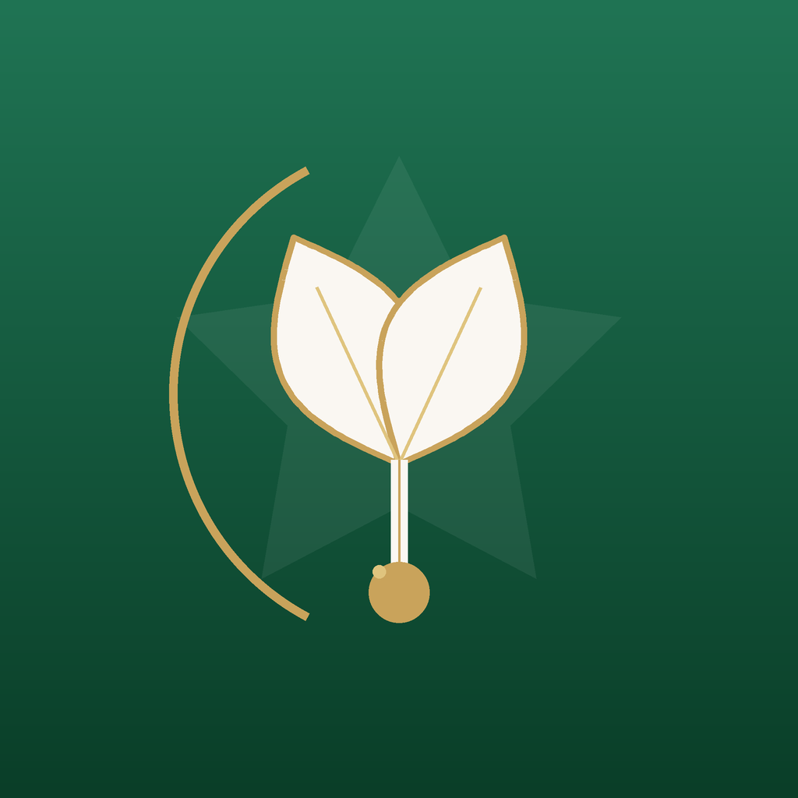

صوّر وجبتك فيحلّلها التطبيق ويعرض مدى توافقها مع نظام الطيبات الغذائي — مع متابعة يومية، ودليل كامل، وتذكيرات مرنة، ونصائح.
قريباً على App Storeصوّر طبقك واحصل على نسبة الالتزام مع حكم لكل عنصر: طيّب أو خبيث أو مشروط.
حلقة الالتزام، عدّاد الأيام المتتالية، وسجلّ وجباتك مع رسوم بيانية أسبوعية وشهرية.
قوائم المسموح والممنوع وبحث سريع: «هل هذا الطعام مسموح؟».
متتبّع لأيام الإثنين والخميس والأيام البيض مع تذكيرات قبل الصيام.
تذكيرات مرنة ونصائح يومية متنوّعة، كلها اختيارية وقابلة للضبط.
بياناتك تُخزَّن على جهازك، ولا نبيعها ولا نستخدم أدوات تتبّع.
هذا التطبيق أداة لتتبّع نظام غذائي تختاره بنفسك. لا يقدّم استشارة طبية ولا يدّعي علاج أي مرض. استشر طبيبك أو أخصائي تغذية قبل اتباع أي نظام غذائي، خاصةً إن كنت تعاني مرضاً مزمناً أو كنت حاملاً أو مرضعاً أو دون 18 عاماً.